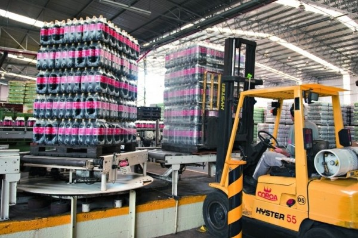

A agricultura é a base da economia, destacando-se o fato do grande cultivo de frutas que somente se adaptam a climas temperados, o destaque é o morango, mas também há o cultivo da uva e da maçã, além da forte presença do café (da variação arábica, adaptada a climas mais frios) e das hortaliças.
Plantação de Oliveiras - Domingos Martins, Espírito Santo
Economicamente, o turismo é muito importante, assim como o mercado imobiliário, Domingos Martins possui um dos maiores índices de liquidez imobiliária da Região Sudeste. Estima-se uma demanda imobiliária na casa de dez mil imóveis residenciais, sendo o metro quadrado na área urbana compatível com grandes metrópoles como São Paulo e Rio de janeiro. Isso deve-se ao clima ameno, a tranquilidade, índices de criminalidade muito menores em comparação à grandes cidades, e sua distância da capital muito pequena, de apenas quarenta e dois quilômetros, todos esses fatores fazem com que a procura por imóveis na região (e aumento dos preço) esteja na contramão da tendência das capitais, ou seja, enquanto as capitais estão com seus preços por metro quadrado estabilizadas, ou em queda, Domingos Martins está em forte curva de subida de valorização.
Praça - Domingos Martins, Espírito Santo
Além disso, a capital também abriga a sede da fábrica "Refrigerantes Coroa", e algumas produções caseiras de biscoitos típicos (da tradição alemã), além do turismo, a cidade atrai muitos turistas, graças ao clima frio, às cachoeiras, ao rafting, trilhas e rapel, além da tranquilidade e da natureza. A cidade também é uma grande produtora de água mineral.
Fábrica Grupo Coroa - Domingos Martins, Espírito Santo